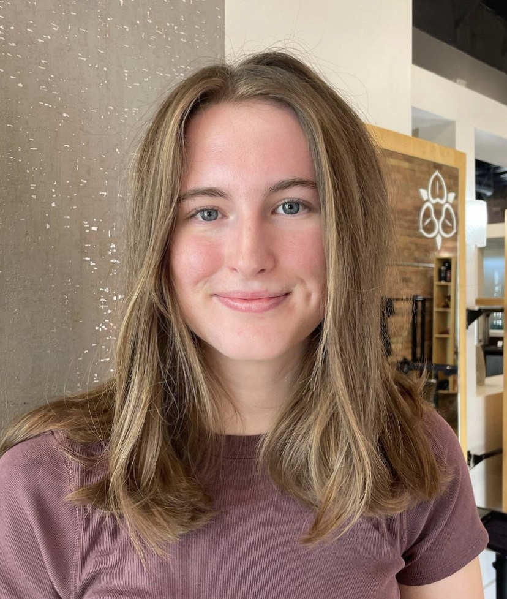

Information Systems Student | QA & Web Development

I'm a senior at the University of Utah studying Information Systems at the David Eccles School of Business. I have experience in both manual and automated testing, especially using Playwright for web application testing. I've worked on writing and running test scripts, doing regression and unit testing, and making testing more efficient.
Beyond QA testing, I also have experience in web development and have built projects using HTML, CSS, JavaScript, Node.js, and Python.
Outside of tech, I love spending time outdoors with friends and family, exploring new places, and making great memories.
January 2025 - Present
As a QA Analyst Intern at Data Quality Co-op, I specialize in both manual and automated testing to ensure software quality. My work includes:
June 2023 - Present
As a Dean’s Assistant, I support administrative operations at the David Eccles School of Business by:
Graduation Date: May 3, 2025
My Bachelor of Science in Information Systems at the University of Utah has equipped me with a strong foundation in business and technology. I have developed skills in:
Through this program, I have gained the expertise to bridge the gap between business and technology. My passion lies in QA testing and data engineering, ensuring reliable, scalable, and innovative IT solutions.